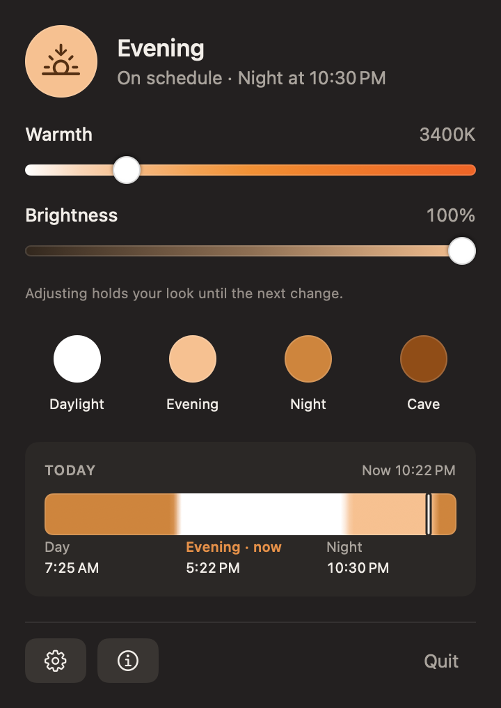
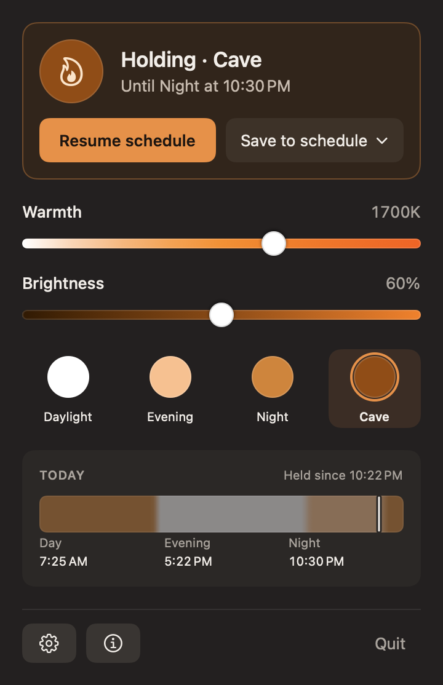
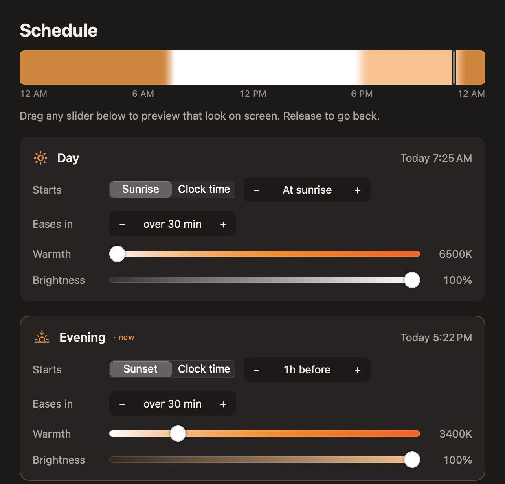

For macOS
Warmer screens, on your terms.
Ember Shift warms and dims your display as evening comes. When you want it warmer, sooner, or darker, you take over, and the schedule waits.
- Free and open source (MIT)
- macOS 15 or later
- No network access

The sun suggests. You decide.
Most screen tinters follow the sun and leave you to live with it. Ember Shift keeps the schedule and gets out of the way whenever you want something else.
Holds that hold
Move a slider or click a preset and that look stays until the schedule's next change. Resume any time with one click.
Darker than macOS allows
Warmth and brightness are separate sliders, and brightness dims through the display's gamma, below the system minimum.
A schedule you set
Start Evening an hour before sunset, Night at 10:30, Day at sunrise. Each phase eases in over its own number of minutes.
Smooth changes
Presets, Resume and the end of a hold fade over 30 seconds, or whatever you prefer. Dragging a slider is instant.
Stays tinted
Sleep, wake, a new monitor, another app resetting colors: Ember Shift notices within seconds and puts your look back.
Private by design
Your location is used only on your Mac to work out sunrise and sunset. The app never touches the network.
Curtains drawn at 3 PM? Go orange.
Pick Cave, Night, or dial in your own. The panel shows what you're holding, when the schedule takes back over, and the held stretch on today's timeline.
- One click to resume the schedule early
- Save a look you like as your Evening or Night setting

Tune every phase, and see it as you go.
Each phase starts at sunrise, sunset, or a clock time, with its own ease-in, warmth and brightness. Drag a slider and your screen previews that look; let go and it returns.

Install from source
You need macOS 15 or later and Swift 6, from Xcode or the Command Line Tools (xcode-select --install). A signed download is on the way.
# Get the code git clone https://github.com/chuckconway/ember-shift.git cd ember-shift # Check, build, sign and install to ~/Applications ./build-app.sh # Launch open ~/Applications/"Ember Shift.app"
Good to know
- Some displays can't be tinted. DisplayLink docks, Sidecar and AirPlay displays ignore gamma tables.
- Screenshots look untinted. The tint is applied after the image is captured, so screenshots and recordings show normal colors.
- It can't harm your monitor. Ember Shift only changes the Mac's color lookup table, the same mechanism calibration tools use. It never touches the monitor's backlight, firmware or settings, and macOS resets the table when the app quits, crashes or the Mac restarts.
- Turn it off for color-critical work. Photo and video editing need accurate color; click Daylight or quit the app.
- Source builds are signed ad hoc. macOS may ask for location permission again after you rebuild.